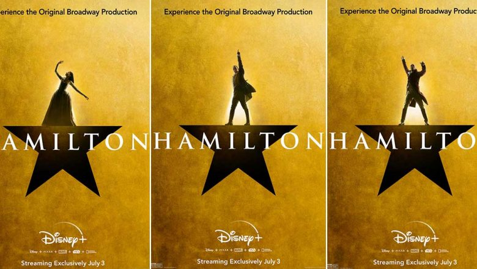
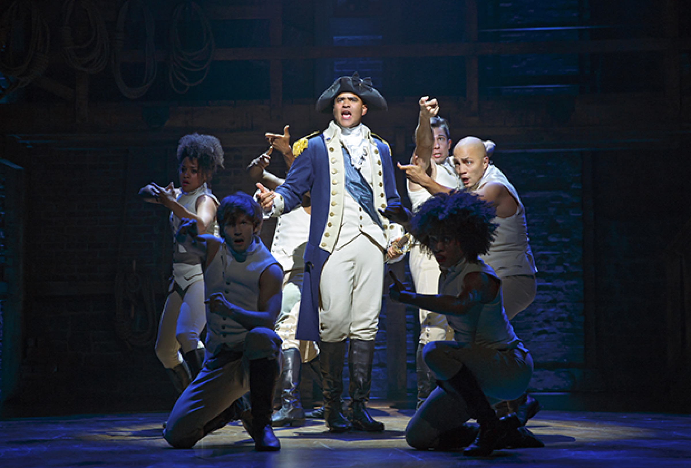
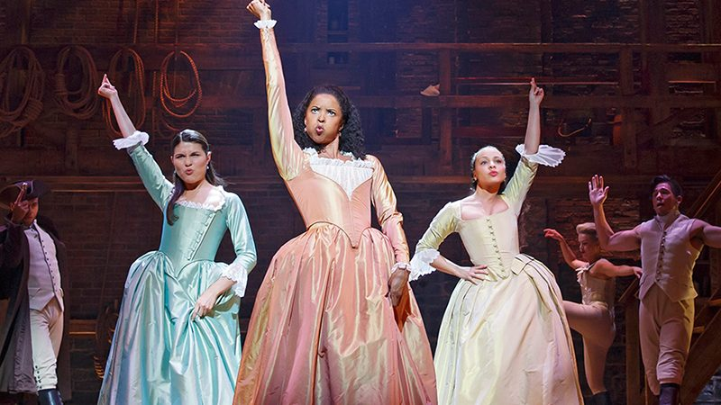

《汉密尔顿：一部美国音乐剧》（英语：Hamilton: An American Musical）。 一部关于美国开国元勋亚历山大·汉密尔顿的音乐剧，由林-曼努尔·米兰达编剧、作曲及填词。这出剧受到2004年朗·车诺所写的传记《亚历山大·汉密尔顿》所启发，评价与票房都取得了巨大成功。
休·曼努埃尔·米兰达（Lin-Manuel Miranda）在暂时结束了百老汇的热门表演《身在高地》的表演，去休假之时，读了罗恩·切尔诺撰写的传记：《亚历山大·汉密尔顿》。 在完成了前几章之后，米兰达开始设想汉密尔顿的一生，并研究是否能创造描绘汉密尔顿生平的舞台音乐剧。这之后他发现，这之前，在百老汇上演的汉密尔顿的故事是在1917年。
经过一段时间的研究，米兰达（Miranda）开启了名为《汉密尔顿混音带（The Hamilton Mixtape）》的项目。
2009年5月12日，米兰达（Miranda）受邀在白宫，为奥巴马政府进行《身在高地》里的演出。 但是他没有，取而代之的是，他演奏了《汉密尔顿混音带（The Hamilton Mixtape）》中的第一首歌，这是《Hamilton》的开场曲目“亚历山大汉密尔顿”的早期版本。
你知道10美元纸币上的头像是谁吗？
亚历山大·汉密尔顿（Alexander Hamilton，1757年1月11日 - 1804年7月12日）是美国的开国元勋之一，也是美国的第一任财政部长。出生在加勒比海的小岛,幼年成为孤儿，之后因其展露的才能，被送到纽约国王学院接受教育，接着志愿参军，在独立战争中得到华盛顿赏识成为他的副手，在 Yorktown 战役中领兵对抗英军。建国后他主张建立强大的中央政府和中央军队。他左右了前三届总统的选举。他一手创立的金融机制使美国快速地在战后实现经济繁荣。Hamilton 也是美国第一个传出桃色丑闻的公职人员。49岁时与当时的副总统 Aaron Burr 决斗时放弃开枪机会，次日丧生。
如果说杰斐逊提供了美国政治论文的必要华丽诗篇，那么汉密尔顿就撰写了美国的治国散文。没有哪位开国元勋像汉密尔顿那样对美国未来的政治、军事和经济实力有如此的先见之明，也没有哪个人像他那样制订了如此恰如其分的体制使全国上下团结一心。汉密尔顿正是美国建国的影子，同时他也证明，就是是不被世人认可的孤儿，也能爬到国父的位置，并给后世留下诸多的遗产。
尽管如此，他却没得到国父应有的纪念。比起其他的国父，他的名字更少被提起，甚至到了10美元纸巾要取消他换成别人的地步。
《汉密尔顿：一部美国音乐剧》的诞生，让人们重新认识到了这位国父做出了多么重要的贡献，以及应该如何重新去评价他的生平。
剧中采用了众多的多种族演员。包括黑人还有拉丁裔、亚裔。主创Lin-Manuel Miranda(休·曼努埃尔·米兰达)自己就是波多黎各移民二代。George Washington（乔治·华盛顿）由黑人Christopher Jackson饰演，hamilton的妻子Eliza Hamilton由亚裔Phillipa Soo饰演（Phillipa Soo有中国血统），桃色丑闻的情人Maria Reynolds由拉丁裔Jasmine Cephas Jones饰演。
为什么要这样做？
在当时，音乐剧是白人的专属领域，其他种族的角色都建立在刻板印象之下，比如波多黎各人如果有戏份，那一定是小混混打架。Lin-Manuel Miranda想打破这一局面，传作真正描写自己种族的生活的音乐剧，然后，《身在高地》诞生了，横扫那年的托尼奖（音乐剧最高奖项）。以此为基础，《hamilton（汉密尔顿）》同样使用了多种族的选角，证明就算是少数种族，也可以创作出优秀的作品，打破刻板印象。更重要的是，汉密尔顿本身就是移民，他展现了一个移民的智慧和力量，多种族的选角正好符合这部剧的理念。
同时，这部剧采用了多彩的音乐种类，但是主轴心是rap。因为正如hamilton阐述自己的理念“I am not throwing away my shot! 我不会放过这次良机！ I am not throwing away my shot! 我不会放任机会溜走！ Hey yo, I'm just like my country 我就和我的国家一样 I'm young, scrappy and hungry 年轻，好斗，迫切之极。”rap正是年轻而富有活力和激情的象征，Lin-Manuel Miranda本人更是rap的专门人士，还组建了一个组合，于是以rap为主要基调的理念就这么定下来了。
| 年份 | 成绩 |
|---|---|
| 2015 | 百老汇票房仅次于经典曲目《狮子王》 |
| 2015 | 外围剧评人奖 Outer Critics Circle Awards |
| 2015 | 美国历史最悠久的戏剧奖 Drama League Awards |
| 2015 | 纽约戏剧评论圈最佳戏剧奖（New York Drama Critics' Circle Awards） |
| 2016 | 成为纽约市单周票房最高的票房，连续八场上演，一周票房收入330万美元。 |
| 2016 | 美国话剧和音乐剧最高奖项 Tony Awards |
| 2016 | 再次获得戏剧奖 Drama League Awards |
| 2016 | 新闻界最高荣誉奖项之一普利策奖 Pulitzer Prize |
| 2016 | 音乐界的奥斯卡：格莱美 Grammy Awards |
| 2017 | 在伦敦维多利亚宫剧院开启伦敦场。同时开启美国巡演。 |
| 2018 | 英国戏剧最高荣誉大奖 奥利弗奖 Olivier Awards |
| 2018 | 第二次美国巡演 |
| 2019 | 第三次美国巡演 |
| 2020 | 被迪士尼以7500万美元买下电影版本的发行权 |
哈密尔顿

华盛顿
斯凯乐姐妹